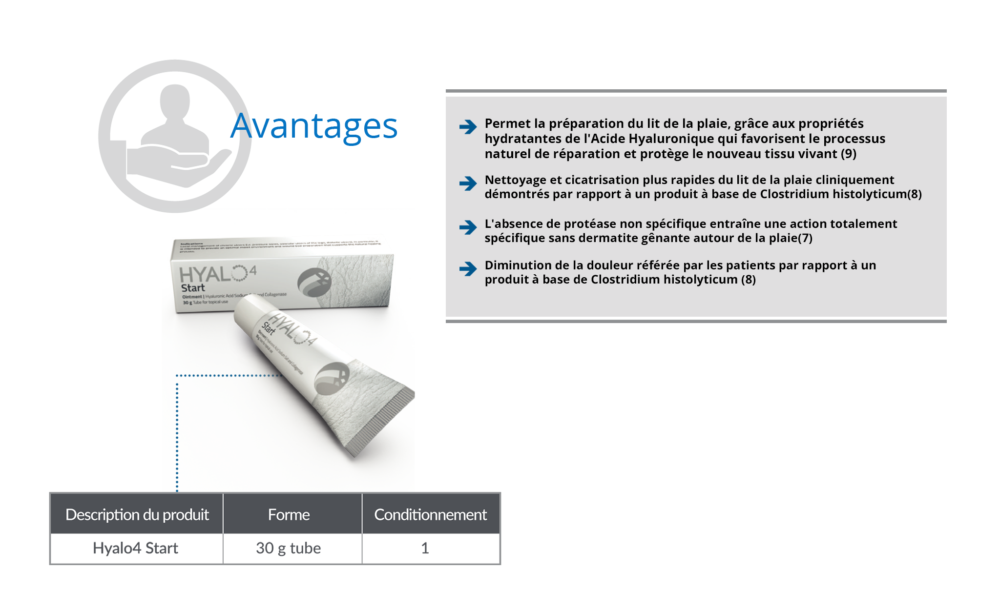
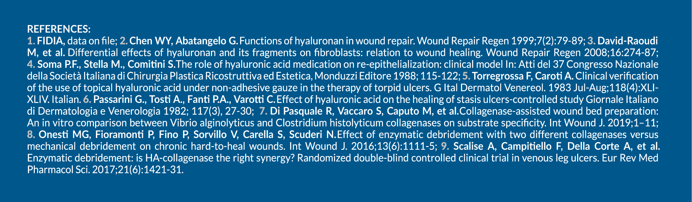

Error: html-webpack-plugin could not minify the generated output.
In production mode the html minifcation is enabled by default.
If you are not generating a valid html output please disable it manually.
You can do so by adding the following setting to your HtmlWebpackPlugin config:
|
| minify: false
|
See https://github.com/jantimon/html-webpack-plugin#options for details.
For parser dedicated bugs please create an issue here:
https://danielruf.github.io/html-minifier-terser/
Parse Error: <0,0093


Très fluide, doux et simple à appliquer (1)
Pas d'inconfort ni de douleur pour le patient(8)
Favorise la cicatrisation tout en préparant le lit de la plaie(1)
Stockage
Conserver à une température ne dépassant pas 30 °C. Ne pas
congeler.